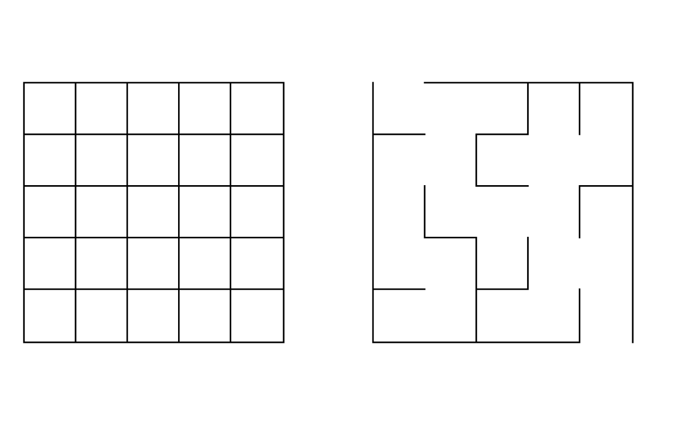
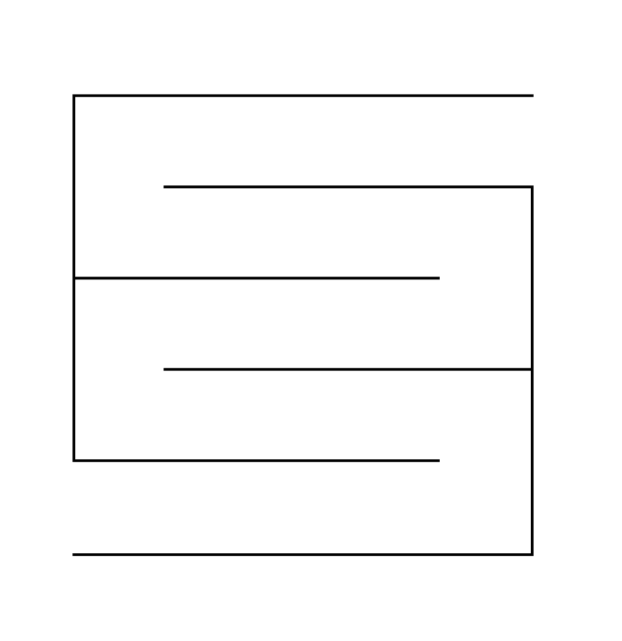
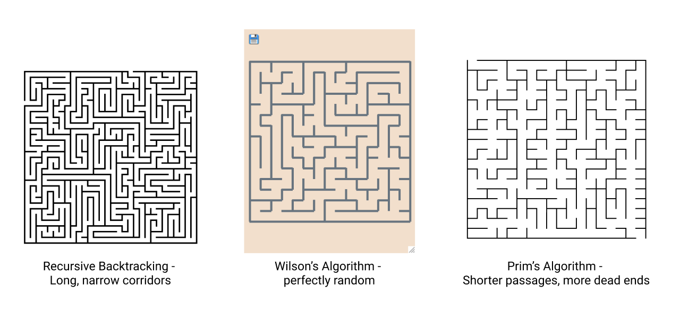

Maze Generation
Maze generation and its various algorithms
Who doesn’t love a good maze? Small, little puzzles for children to solve or for farmers to grow. Everyone knows the basic principles behind every maze, but have you ever tried making one yourself? Give it a shot. Spend a couple of minutes drawing out a maze and see what you can come up with.
Not so easy, is it? Now imagine drawing a gigantic, elaborate maze, one with millions of unique paths that no human could ever solve. Such a task would be a serious challenge for even the most skilled artists and architects, but not for a computer. How can we program a computer to create a maze for us? Well, let’s start by formalizing what a maze consists of. To simplify things, let’s assume that we are working with a rectangular maze composed of only vertical and horizontal lines.
A maze has these properties:
- Exactly one entry point and one exit point
- Exactly one path going from the entry to the exit (excluding paths involving backtracking)
- Every path other than the correct one should result in a dead-end
Using these parameters, we can make some abstractions about our problem. Between any two given points in our maze, there should be exactly one path from the start to that point (if we never backtrack), and it should be possible to reach any location in the maze. If you’ve read the previous articles, this should remind you of a tree. Recall that one property of a tree is a graph where there is exactly one path between every set of two nodes. We can then simplify this problem to constructing a tree out of a group of nodes.
Visualize our maze as a grid of rectangular cells. Each cell has 4 walls, and we want to break a number of these walls such that we satisfy our constraint that there is exactly one path between any two cells. After doing so, all that’s left is to break two of the outer walls to create a starting and ending point.

The graph equivalent of breaking a wall between two cells is constructing an edge between the two nodes representing those cells. So essentially, we have a collection of nodes where each node has up to four potential connections. Our task is choosing some number of those neighbors to connect to with an edge, forming a tree containing all of the nodes. This is known as a spanning tree. We could easily make a simple maze (shown below) that fits all the constraints, but that wouldn’t make an exciting maze. We want something more challenging to solve.

To make a more complex maze, we need to randomize our algorithm. We can randomly choose walls to break until we get a spanning tree. If you’ve heard of the minimum spanning tree problem, a random spanning tree is the same idea but being random rather than the minimum. Many different algorithms accomplish this that all vary based on running speed and how it randomly makes decisions. Some random spanning tree algorithms are biased toward long, narrow corridors (recursive backtracking), while others create shorter dead ends (Kruskal’s algorithm, Prim’s algorithm), and others use a perfectly random uniform distribution (Wilson’s algorithm). Some algorithms start with a grid full of walls and break them to form paths, while others begin with a blank slate and place walls.

Ultimately, all of these maze generation algorithms may have a different way of producing the spanning tree, but they all have the same central idea: forming a spanning tree out of a set of nodes. So next time you ever find yourself needing to draw a maze, however often or rare that may be, think about how a computer would do it. Try it out right now. Start with a grid of squares and erase walls until you have a maze, then compare it to what you drew at the beginning of this article!